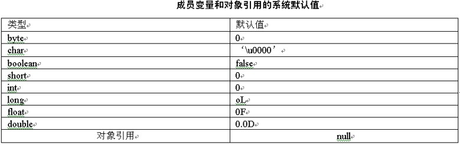

在日常生活中，在盖房子之前要首先设计一个建筑图纸，然后根据图纸来盖房子。所谓类，好比在日常生活中描述一个物品的信息，如房子的建筑图纸。而对象就好比实实在在的房子。本章将要介绍类的定义、类的成员变量的定义和方法的定义、方法的参数等知识。通过本章的学习，同学们应该能够完成如下几个目标。
- 了解什么是面向对象。
- 熟悉Java中的类并能够进行类的操作。
- 掌握成员变量和局部变量的区别。
- 掌握Java程序中的方法的创建和使用。
6.1 什么是面向对象
所谓面向对象，是指编写程序的时候要围绕着一个对象的功能进行编写的。本节将要介绍面向对象的特点以及与面向过程编程的区别。
6.1.1 面向对象编程的特点
面向对象编程的缩写是OOP，全称为Object Oriented Programming。在进行面向对象的编程时，方法和成员变量都写在具体的对象里，并对其成员变量和方法有很好的隐藏性。对象之间的访问都是通过其接口进行的。下面列举面向对象编程的特点，分为如下几种：封装、继承、多态
首先要说的是继承。所谓继承，是发生在类与类之间的，是子类共享父类成员变量和方法的一种模式。通过扩展子类的方法可以使子类有比父类更加强大的功能。
说明：继承是面向对象编程的特点，同样也是Java的特点，这里和其他语言有很大不同。
//bike类描述的是一个自行车
class bike
{
}
// racing_cycle类描述的是一个公路赛车,继承自bike
class racing_cycle extends bike
{
}
提示：继承是发生在类与类之间的。继承可以是单继承，也可以多层继承。
多态是指对象在运行期和编译期具有两种状态，多态的使用使代码具有了更多的灵活性和重用性。
抽象是指在定义类的时候，确定了该类的一些行为和动作。比如自行车可以移动，但怎么移动不进行说明。这种提前定义一些动作和行为的类为抽象的。
封装是指对一件物品的描述信息是这个物品所特有的，是不能让外界看到的一些成员变量和方法。在Java里成员变量和方法就被封装在类里，需要通过一些特有的方法访问它们。
6.1.2 面向对象编程与面向过程编程的区别
面向过程是指在遇到问题的时候，怎么去解决这个问题，而分析问题的步骤，就是解决这个问题的方法，是通过方法一步一步来完成的。面向对象是指在遇到问题的时候，把问题分解成各自独立功能的类，而这个类是完成各自问题的。总结如下所述。
- 面向过程和面向对象最明显的区别就是，面向对象是按照要完成的功能来实现的，而面向过程是按照解决这个问题的步骤来实现的。
- 面向对象是按照程序中的功能进行划分的。
- 面向过程是按照问题的解决思路来划分的，是一步一步来解决问题的。
- 面向过程更看重的是完成问题的过程。
- 面向对象更看重的是功能，通过各种功能模块的组合来完成问题。
6.2 什么是类
所谓类是一种抽象的东西，描述的是一个物品的完整信息。比如房子和图纸的关系。在Java里，图纸就是类，定义了房子的各种信息，而房子是类的实体。
6.2.1 类的定义和对象的创建
定义一个类表示定义了一个功能模块。下面先介绍如何定义一个类，以及如何创建这个类的实例，即对象。类是通过关键字class来定义的，在class关键字后面加上类的名称，这样就创建了一个类。在类里面可以定义类的成员变量和方法。类的语法代码如下所示。
class 类的名称
{
//类的成员变量
int a;
//类的方法
void main()
{
}
}
创建类的实例是通过new关键字来定义的，后面加上定义类时为类起的名称，需要注意的是在类名后还需要一个括号。创建类的实例的代码如下所示。
new 类的名称();
6.2.2 如何使用现有类
在定义一些类的时候，如何使用它们呢？这里需要分为多种情况。定义的类可以在一个包下面，也可以不在一个包下面，这在使用时是不同的。类又分为已有类和自定义类，它们之间的使用也是有区别的。下面就通过范例来讲解在不同情况下如何使用类。
【范例】在同目录下使用类。首先是定义一个Bike类，在该类中不存在任何成员变量和方法，这里只是演示如何在同一目录下使用类。
//Bike.java
class Bike
{
}
接下来定义一个使用Bike类的类。
//TestBike.java
//在testBike类里使用了Bike类
class TestBike
{
Bike bike = new Bike();
}
6.2.3 类设计的技巧
设计一个类要明确这个所要完成的功能，类里的成员变量和方法是描述类的功能的。如果定义了和这个类不相关的成员变量和方法将不是一个良好的设计。
【范例一】示例代码是一个不太好的类设计
public class bike
{
//这个成员变量描述的是自行车的颜色.
String color = "黄色";
//这个成员变量描述的是公路赛车的颜色,所以在这里不太合适
String racing_color = "绿色";
}
在本程序中定义了一个表示自行车颜色的color成员变量，又定义了一个表示赛车颜色的racing_color成员变量；而该程序是定义的一个bike自行车类，所以定义表示赛车颜色的racing_color成员变量是不太好的选择。
【范例二】示例代码是一个良好的类设计。
public class bike
{
//这个成员变量描述的是自行车的颜色
String color = "黄色";
}
public class racing
{
//这个成员变量描述的是公路赛车的颜色
String racing_color = "绿色";
}
在该范例中，定义了两个类。其中bike类中只定义了一个表示自行车颜色的color成员变量。同样在racing类中只定义了一个表示赛车颜色的racing_color成员变量。这种设计相对上一个范例中的设计要好得多，这样使类和成员变量相对应，也使别人更容易读懂代码。
6.3 成员变量
所谓成员变量就是这个类里定义的一些私有的变量.，这些变量是属于这个类的。就好比日常生活中的自行车的大小，即这个车子是26还是28的，这个尺寸就是自行车的成员变量，是描述这个自行车的。下面开始介绍成员变量。
6.3.1 成员变量的创建
成员变量描述的是这个类的一些属性或状态的，下面通过代码来演示怎么定义成员变量。语法为：变量的类型 变量的名称。
//bike类描述的是一个自行车
public class bike
{
//这个成员变量描述的是自行车的颜色.
String color;
//这个成员变量描述的是自行车的大小,即尺寸.
String size;
}
在该程序中，定义了一个叫做bike的类，在该类中定义了两个成员变量，一个是表示自行车颜色的color成员变量，一个是表示自行车型号的size成员变量。
6.3.2 成员变量的初始化
通过new关键字来创建一个对象后，会有一个系统默认的初始值。所以说不管有没有在创建成员变量的时候给变量一个值，系统都会有一个默认的值。
成员变量和对象的引用在申明的时候不对其赋初值，那么系统都会赋一个初值，具体的信息如表所示。
6.4 局部变量
局部变量和成员变量很相似都是描述信息的。局部变量和成员变量的不同点就是局部变量是在方法体里创建的，在方法体外是访问不到这个变量的。
6.4.1 局部变量的创建和初始化
局部变量描述的是方法体的一些属性或状态的，下面通过代码来演示怎么定义局部变量。创建局部变量的基本语法为：变量的类型 变量的名称。
//test类描述的是基本类型的初始化
public class test4
{
//程序的运行函数即主入口函数
public static void main(String args[])
{
//基本类型的局部变量
int size = 123;
boolean b = true;
//打印并显示局部变量
System.out.println(size);
System.out.println(b);
}
}
6.4.2 局部变量和成员变量的区别
局部变量描述的是这个方法体内的属性的，而成员变量描述的是这个对象里的属性的，它们之间的区别，即访问区别如下：
- 成员变量可以被public、protected、default、private、static、final修饰符修饰。
- 局部变量可以被final修饰符修饰，但不能修饰为public、protected、default、private、static。
- 成员变量是在堆里进行创建的，而局部变量是在栈里进行创建的。
- 成员变量有系统默认值。
- 局部变量没有系统默认值，必须手动赋值。
6.5 方法
每个人都有走、吃和睡等动作。在Java中，所谓方法就好比日常生活中的一个动作，是完成一系列操作的。在Java中也是如此，方法收到对象的信息，进行处理的操作。
6.5.1 方法的创建和参数
方法的参数是提供外界在执行方法的时候提供给方法的特殊描述信息的，好比日常生活中的，用力砸东西，用大力砸东西。而这个用大力就是提供给这个进行特殊描述的。创建方法的语法为：
访问修饰符 方法的返回类型 方法名称(方法参数){方法体}
方法的定义如下所示。
public void add(int i, int n)
{
System.out.println(i+n);
}
代码说明：
方法名称为add，有两个参数都是int类型的。
方法的返回类型为void（空）
方法体是打印i+n的值，并显示出来。
方法的修饰符为public类型的，修饰符可有可无。
方法的返回类型有很多种，主要分为如下几类。
- 方法返回值为void类型时为无返回值
- 方法返回值还可以为任意的类型，如String、Boolean、int。如果定义了方法的返回类型就必须在方法体内用return把返回值进行返回
- 方法的返回值可以为null，但必须是对象类型。基本类型不能返回null
- 在返回值为基本类型的时候，只要能够自动转换就可返回
方法的参数也有多种形式，下面是对方法参数的讨论
- 方法的参数可以为基本数据类型，也可以为对象引用类型
- 每个参数都有完整的声明该变量的形式
- 方法的参数可以有一个，也可有多个，也可以不声明参数
- Java程序的入口main就为一个方法，参数为String[] args，它是个特殊的方法
6.5.2 方法参数的传递
参数的传递是传递的值还是引用呢。下面通过例子来分别说明，请仔细考虑。
当传递类型为基本类型时，传递的是该类型的值。
//test类描述的是基本类型的传递
public class test
{
//方法add是把传入的参数进行+1，并显示其结果
public void add(int i)
{
i = i + 1;
System.out.println(i);
}
//程序的运行方法，即主入口方法
public static void main(String args[])
{
//基本类型的局部变量
int size = 44;
//创建bike类的对象实例，即bike类的对象引用b
test t = new test();
//打印原来的值
System.out.println(size);
//运行时的值
t.add(size);
//打印运行后的值
System.out.println(size);
}
}
在参数为基本类型进行传递的时候，是传递的这个值的备份，即第二份。不论在方法中怎么改变这个备份，都不是操作原来的数据，所以原来的值是不会改变的。
当传递的参数为对象引用类型时，也是利用的传值的方式进行的。
//test类描述的是方法的传递
public class test
{
public static void main(String[] args)
{
//创建一个对象类型
String s = new String("Hello ");
//打印其值
System.out.println("before : " + s);
//通过方法去改变其值
changeString(s);
//打印方法改变的值和原值
System.out.println("changeString : " + s);
System.out.println("after : " + s);
}
public static void changeString(String str)
{
str = new String("hi");
str = str + "china!";
}
}
当把对象引用s传递到一个方法后，这个方法可以改变这个对象的属性，并能返回相应的改变。但这个对象引用指向的这个字符串s是永远不会改变的。这里传递对象引用后，又通过这个引用去创建了一个新的String类型的字符串，这两个字符串在内存中当然不是同一个了。
6.6 对象引用的使用
所谓对象引用就是该引用名称指向内存中的一个对象，通过调用该引用即可完成对该对象的操作。本节将要讨论一些操作对象引用中将出现的一些常见问题。如不存在的对象、空引用、对象间的比较等问题，下面分别来说明。
6.6.1 调用不存在的对象或成员变量
如果调用的对象或成员变量没有创建，那么在编译的时候编译器将出现错误。下面用代码演示这个错误，并演示如何修正。
//test类描述的是测试访问不存在的成员变量
public class test
{
//main方法为程序的入口函数
public static void main(String[] args)
{
//创建test类的对象实例
test t = new test();
//t.a访问的是一个不存在的成员变量，将提示不可识别的字段。
System.out.println(t.a);
}
}
运行将会发生如下异常：
Exception in thread "main" java.lang.Error: Unresolved compilation problem: t.a cannot be resolved or is not a field at test.main(test.java:7)
【代码解析】对象引用t要访问的是a这个成员变量，而a没有声明，在编译的时候将提示错误信息。在错误提示里，已经提示为main方法里的第7行，只需查看这里就能找到错误的所在。
修改上述代码使程序运行通过
//test类描述的是测试访问不存在的成员变量
public class test
{
//a为test类的成员变量
String a;
//main方法为程序的入口方法
public static void main(String[] args)
{
//创建test类的对象实例
test t = new test();
//t.a访问的是一个不存在的成员变量，将提示不可识别的字段
System.out.println(t.a);
}
}
根据上例中的错误提示在test类声明了一个名称为a的成员变量。因为String类型的a没有进行赋值，所以打印出来为null。
6.6.2 调用对象为null值的引用
任何操作的对象的值为null的时候都将出现空指针错误，即“NullPointException“错误，因为成员变量和方法是属于对象的，即属于用new关键字创建出来的对象的。下面用代码来演示这个错误，并演示如何进行修正。
//ArrayList类所需要的
import java.util.ArrayList;
//test类测试访问null值的对象
public class test
{
//声明一个成员变量a并进行初值
public String a = "test类的成员变量";
//Java程序的主入口方法
public static void main(String[] args)
{
//创建test类的对象实例
test t = new test();
//创建一个集合类，对象引用为一个null值
ArrayList al = null;
//向一个null的集合对象里添加数据
al.add(t.a);
}
}
ArrayList类为一个集合类和数组很相似，都是用来存储数据用的。错误提示在main方法里的19行，提示为NullPointerException，即空指针错误。对象引用al声明为一个null值，表示这个对象并没有创建其对象的实例，只是一个引用而已。当操作任意一个为null的对象的时候都将提示空指针错误。
对本节的内容进行总结，可以概括成如下几点。
- 任何操作的对象的值为null，都将出现空指针错误，即“NullPointException”。
- NullPointerException错误是运行期的错误，在编译的时候系统是不进行提示的。
- 在声明一个对象引用后尽量为其赋一个初值，来避免空指针的出现。
6.6.3 对象引用间的比较
两个对象引用进行比较，比较的是这两个对象的引用，而引用是在内存中的一个地址。地址当然是不能相同的了。下面通过一个例子来演示引用间的比较。

equals方法在这里比较的是对象的引用，因为equals方法是Object类的方法，而任何类的父类都为Object，equals方法是继承过来的。继承将在后面的章节里做详细讲解。用new关键字创建的对象地址是重新分配的，它们进行比较，地址当然是不同的了。
6.7 this
this是Java保留的一个关键字，所谓this就好比日常生活中的“你我他”中的我，表示自己、本身的意思。在Java里也是如此，表示类的本身。
6.8 综合练习
1.成员变量和局部变量相同情况下时如何访问？
【提示】成员变量和局部变量的访问方式是不同的。
public class LianXi1
{
int i=5; //定义一个成员变量i
public static void main(String args[])
{
int i=6; //定义一个局部变量i
System.out.println("局部变量的值为："+i);
LianXi1 lx=new LianXi1();
System.out.println("成员变量的值为："+lx.i);
}
}
6.9 小结
通过学习本章，可以让同学们了解面向对象的基本思想、类的创建和使用、成员变量和局部变量的区别，以及对象引用的一些注意事项等问题。学好本章可以为以后的学习打下基础。